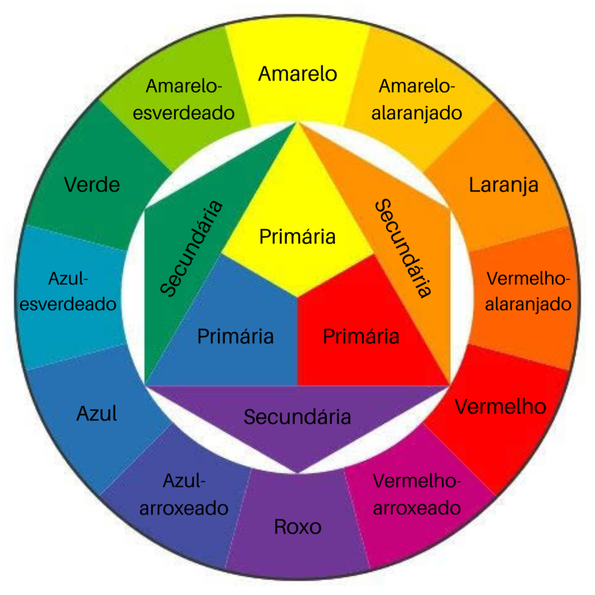

Minhas anotações pagina 2
Lista das anotações
- O poder das cores
- Forma de representar as cores
- Harmonia de cores
- Comandos CSS
- Caixas
O poder das cores
Boa parte de uma boa apresentação de qualquer conteudo é as cores e fonte, quando sabemos escolher bem uma paleta de cores que harmonize com nosso conteudo, ja é um grande passo de um site bonito, o qual vai atrair mais atenção do seu publico.
Não se deve subestimar o poder das cores, ela pode influenciar na quantidade de tempo que seu visitante passa em seu site, podedendo até mesmo ser um criterio de decisão para uma compra.
As cores passam emoção para o subconsciente das pessoas, mesmo que na maioria dos casos isso não seja feito de forma totalemte consciente, se você fizer uma breve busca pelo termo "psicologia das cores", vai ver varias sugestões de emoções para determinada cor.
Forma de representar as cores
- Respresentação por nomes
- Representação por codigos hexadecimais
- Decimal: 0 1 2 3 4 5 6 7 8 9
- Hexadecimal: 0 1 2 3 4 5 6 7 8 9 A B C D E F
- Representação em RGB (Red Green, Blue)
- Representação em HSL (Hue, Sturation, Luminosity)
Harmonia de Cores
- Circulo Cromático
O circulo cromatico é utilizado principalmnete para harmonia de cores.
- Cores Primarias
Amarelo, Vermelho e Azul
- Cores Secundarias
Laranja, Violeta e Verde
- Cores Terciarias
Amarelo-esverdeado, Amarelo-alaranjado, Vermelho-alaranjado, Vermelho-arroxeado, Azul-arroxeado eo Azul-esverdeado.
Sempre que for nomiar uma cor terciaria você deve primeiro colocar o nome da cor primaria.
- Temperatura de cores
Da cor violeta até a cor amarelo-esverdeado são as cores frias.
Da cor amarela até a cor vermlho-arroxeado são as cores quentes.
- Significado das cores
- Amarelo: otimismo, felicidade, desenvolvimento e clareza. O amarelo estimula os processos mentais e o sistema nervoso, ativa a memória e encoraja a comunicação.
- Verde: riqueza, natureza, crescimento e saúde. Essa cor acalma, traz harmonia e renovação, relaxa o corpo e ajuda a aliviar a ansiedade.
- Azul: confiança, força, credibilidade e profissionalismo. A cor mais utilizada em projeto de UI e UX, está carregada de um senso de inovação e segurança.
- Roxo: imaginação, sabedoria, realeza e misticismo. O roxo é empolgante, ao mesmo tempo em que acalma a mente e os nervos, encoraja a criação e inspira.
- Rosa: romantismo, diversão e jovialidade. Esse tom excitante pode aumentar a pressão sanguínea, a respiração, a pulsação e os batimentos cardíacos. Estimula a energia, ação e confiança.
- Vermelho: coragem, foco, excitação e energia. Assim como o rosa, o vermelho também altera propriedades físicas de nosso corpo, desde a pressão sanguínea até os batimentos cardíacos. Por estimular a ação e a confiança, essa cor é muito utilizada em promoções.
- Laranja: alegria, confiança e agressividade. Essa cor estimula a atividade, o apetite e a socialização. Uma escolha divertida, cheia de calor e energia.
- Branco: pureza, neutralidade e limpeza. O branco simboliza novos começos, encoraja a organização e auxilia na clareza mental.
- Preto: autoridade, poder e suavidade. A falta de cor representa o vazio e evoca o mistério.
Comandos CSS
@charset "UTF-8";
@import url('https://fonts.googleapis.com/css2?family=Satisfy&display=swap');= Fonte externa
color: black; = cor da letra
font-family: Arial, Helvetica, sans-serif;= Fonte da letra
text-align: center;= alinhamento
text-shadow: 1px 1px 2px rgba(255, 0, 0, 0.521);= Sombra do texto
font-style: italic; = Parece ser o estilo da fonte rsrs
text-decoration: underline;= Sublinhar
font-size: 2.3em;= Tamanho da fonte 1em = 16px
/*shorthand font
font: Font-style -> font-weight -> font-size -> font-family ->
background-color: white;
border-radius: 10px;= Tamanho das bordas
box-shadow: 5px 5px 20px rgba(0, 0, 0, 0.692);= Sombra das bordas
width: 1000px;= Largura do corpo
padding: 10px;= Comprimento do corpo
margin: auto;= Distancia da margem
font-family: Arial, Helvetica, sans-serif;= Fonte da letra
text-align: justify;= Alinhamento de texto
text-indent: 20px;= Espaço de paragrafo
/*
Medidas absplutas
cemtimetro, milimetro, polegada, pix, ponto, paica
Medidas relativas
em, ex, rem, vw, vh,%
16px geralmente = 1em
weigth = peso width = largura heigth = altura
font-weight: lighter;= Tonalidade da cor
/*Lighter, normal, bold, bolder, 100-900
background-image: linear-gradient(rgb(84, 84, 173), rgb(196, 94, 94)); /* ->Mais de uma cor de fundo
background-attachment: fixed; = Fixar a cor
Caixas
heigth = Largura
width = Comprimento
border = Borda
padding = Preenchimento entre a borda eo texto
margin = Da borda para fora
autiline = Traçado = fora do elemento, entre a borda ea margin
div = Quebra linha
span = Não quebra a linha
Box-level
<div>
<h1>---<h6>
<p>
<main>
<header>
<nav>
<article>
<aside>
<footer>
<form>
<video>
Inline-level
<span>
<a>
<code>
<small>
<strong>
<em>
<sup>---<sub>
<label>
<button>
<input>
<select>